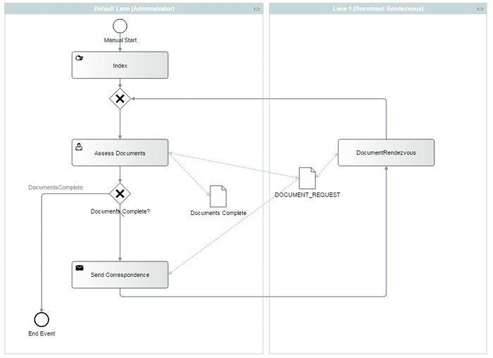
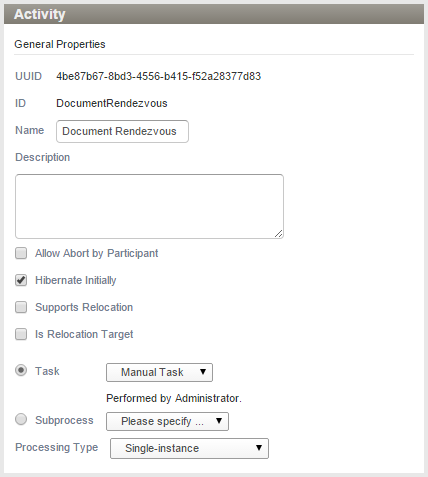

Document Rendezvous
Document Rendezvous can be used to suspend a work process until
a document or documents matching the criteria specified in the wait node rules
enter the system.
The work process is automatically resumed upon the receipt of the required document(s).
Common Use Cases
Document Rendezvous is a common requirement for practically all Business Processes that
are initiated by or otherwise rely on documents.
Use Cases
Use cases are for example:
- A process always requires a request for documentation to
be sent out at a specific point in the process and the
documents received back in to the system before the process can
continue.
- A process may sometimes be missing documentation and a
request for the missing documentation must be sent out and the
document(s) received back in to the system before the process
can continue.
Business Use Case
The following workflow shows a typical Business use case scenario:
- A Process Instance is initiated to fulfill a customer request.
- The processor working the customer request in Stardust discovers
that one or more required documents are missing, and the request cannot proceed without them.
- The customer is contacted to obtain the missing documents.
- The customer sends back the missing documents.
- The missing documents enter Stardust (typically via email or scan)
and must rendezvous with the original in-flight Process Instance.
- After the documents rendezvous with the in-flight Process Instance
the request can continue.
Example Use Case
The following diagrams shows a Claims Processing workflow
using a Document Rendezvous activity:

Figure: Claims Processing Example Workflow
Setting up a Route Activity for Document Rendezvous
A Document Rendezvous activity has to be set up as follows:
- Create a Route Activity (Task = None) for documents that are requiring rendezvous.
- Begin the Activity ID of the Route Activity with the term DocumentRendezvous.
Do not include spaces in the ID!
- Mark the Activity as Hibernate Initially

- Implement the Required Documents Panel to provide an interface for checking which
documents are present and which are missing. It leverages the DOCUMENT_REQUEST data
and sends a request for any missing documents.
- Implement an email application for sending email requests for missing documents.
- Implement the Document Triage screen to provide an interface for rendezvousing
incoming documents with existing in-flight Process Instances. Refer to chapter
Document Triage for details on the Document Triage concept.
Note that Process Attachments cannot be set up for rendezvous using the above pattern. Each rendezvous document must be a specific document.